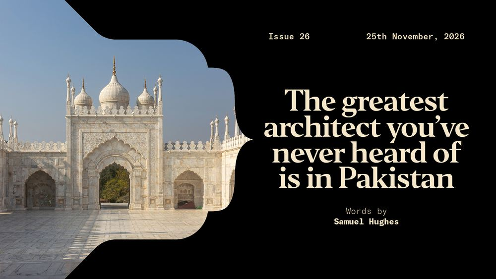

90建筑与设计 · 16
巴基斯坦建筑师 Kamil Khan Mumtaz：在家乡备受推崇，在海外几乎无人知晓（HN 263 分）
四维 82建筑与设计 ×1.1×1.1≈ 90
Works in Progress 刊发摄影专题，介绍 1939 年生于加尔各答、1966 年从伦敦 AA 建筑学院毕业回国执业的巴基斯坦建筑师 Kamil Khan Mumtaz。他早年是坚定的现代主义者，还因共产主义活动两度被军政府入狱；七十年代末主持拉合尔古城保护报告，保住了后来列入世界遗产的 Walled City。1980 年读到 Nader Ardalan《The Sense of Unity》后，他转向复兴巴基斯坦传统建筑，与世袭工匠合作重新找回失传三百年的砖工、平穹顶与 muqarnas 工艺，作品涵盖住宅、清真寺、学校与卡拉奇牛津大学出版社总部。专题收录大量首次在巴基斯坦之外公开的影像。当日 Hacker News 263 分、51 条评论。
💡 点评建筑媒体的聚光灯常年只打在少数几个城市，这位在拉合尔默默修复传统工艺、八十五岁仍在建造的建筑师，恰好说明「最好的建筑师」有多少是被地理而非才华埋没的。本条命中「建筑与设计」主题 ×1.1（已在条目上标注）。
Hacker News / Works in Progress · 原文 →